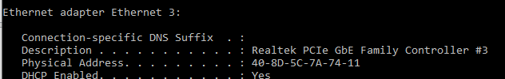

MAC Address
Basically a layer 2 address related to switching.
MAC stands for Media Access Control
Window Command : ipconfig /all

The first 3 pairs of hexes can be used to identify the company who developed it. We can do this by MAC address lookup online. Any device that has network interface have a physical address,
Linux Command : ifconfig